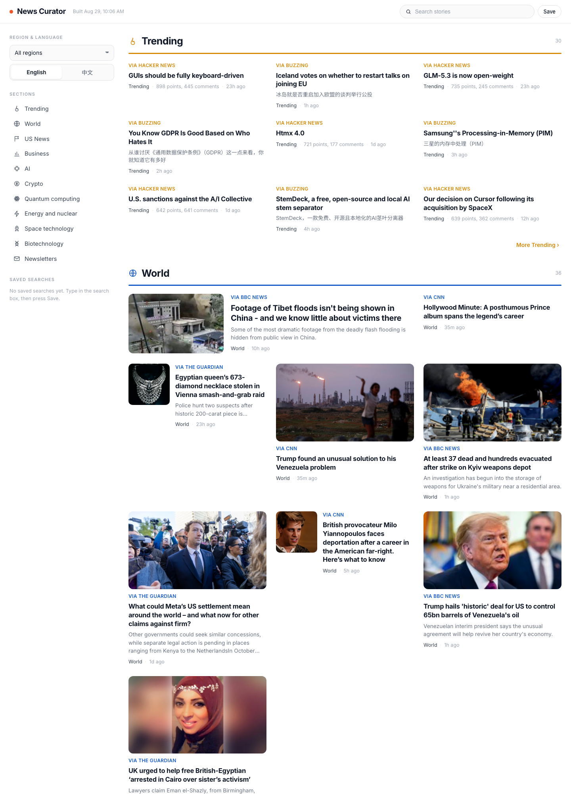

Built 2026-08-29 with real stories fetched live this morning (general news from CNN, Fox, BBC, Guardian, CNBC, CBS; trending from Hacker News + Buzzing; Chinese lane from cnBeta, Solidot, RFI, CNA; your 179 current tech stories). Local only, nothing deployed.
Each screenshot below is the English desktop view. Every direction also has a working interactive version: click "Open interactive" to try the EN / 中文 toggle, saved searches, category navigation, and dark mode. Pick keep / modify / delete on each design and add a sentence of feedback, then export at the bottom.

A · PressReader faithful
Sticky left sidebar (language toggle, sections with icons, saved searches), per-section colored rules, 3-column mixed grid with hero image cards. Closest to the reference you liked.
Digital newspaper front page: masthead, category color bands, one large lead story per section with a ranked headline list beside it, serif headlines. Text-only lead stories (like Hacker News items) use a compact text lead with a 2x2 story grid under it.
Direction B with the coloring taken out. Same structure (masthead, lead story plus ranked list, compact text lead), but the colored category bands are gone: section headers are quiet labels over a single hairline, the palette is near-black on white with one restrained blue used only for kickers and links, and headlines are set in a refined serif with more whitespace. Dark mode is true black.
B2's premium styling with the pictures taken out of the reading list, in the shape of digg's tech page. Each category is a numbered list of up to 20 stories: headline, one line of summary, then source, day heading and time. A slim "Latest from" rail groups the same stories by source on desktop. On the phone (right) each category is a full-width panel you swipe between, with the tab bar following the swipe. Where the same link arrived from two feeds it is shown once, with a real "2 sources" count.
B3's typography in a Swiss editorial grid: every category is a bordered block of boxed cells with 1px hairlines, one large lead cell plus six smaller text cells, and no endless feed. Each category carries its own muted tint (sand, mist blue, blush, sage, lavender, warm gray, sky, clay) on the label cell and the lead cell only, so the blocks are told apart by color without anything getting loud. A Today | Yesterday control at the top filters every block by day, and the last cell ("+N more") expands that block in place to the full top 20 and collapses again. The grid / list icons switch the whole page between this bento view and B3's numbered list. On the phone (right) each category is still a full-width panel you swipe between.
Your current Apple-minimal card style kept, adding the left rail with story counts, section breaks, image-forward cards, and the language toggle. The lowest-risk evolution of what is live today.